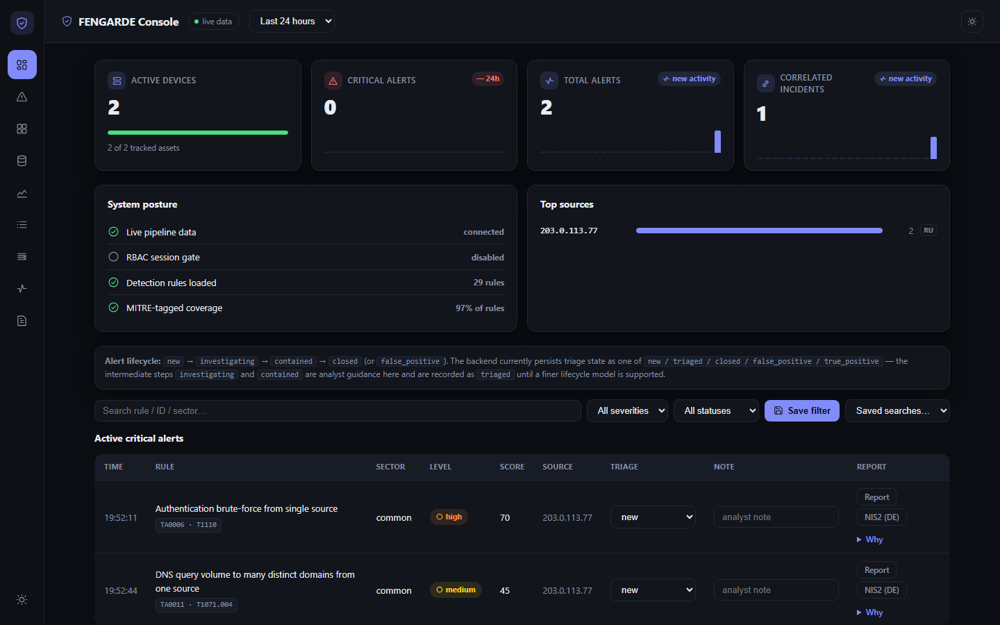

<!--
THESIS: A SIEM's proof isn't a claim, it's a screenshot — so the page reads like an
engineering console handing you its own receipts, not a product marketing page
gesturing at one. Refuses the "hero metric + generic feature cards" SaaS template.
OWN-WORLD: deep-navy hero (soft blurred atmosphere, no photography) dissolving to
near-black content; bold rounded Sora display over Public Sans body over Fragment
Mono for anything measured (commands, counts, endpoints); one blue accent; every
card a real `.gcard` bezel with a real HTTP call as its footer, never a stock icon
tile.
STORY: a security engineer evaluating self-hosted SIEMs lands, sees a real command
they could run in the next 30 seconds, then eight real dashboard screenshots each
captioned with the literal request that produced them.
FIRST VIEWPORT: left column — eyebrow pill, two-line bold headline, one-paragraph
sub, three pill CTAs (primary white "View on GitHub"). Right column — a terminal
card with tabs (Quickstart / Zero-infra demo), traffic-light dots, copy button,
the real `make preflight && make demo` command. Soft navy gradient + blurred glow
behind both, dissolving into the near-black body below.
FORM: brief-pinned direction (user named an exact reference, deepseek.com/harness)
— concept-seed/comp-tournament skipped per new-work.md's brief-pinned-direction
rule; code-led build, no image-gen comp pipeline wired for this repo.
FINISH: unreviewed and undocumented is unfinished; this build ends with the finish
review, the verdict, DESIGN.md, and every shipping raster carrying its provenance.
-->
<meta charset="utf-8">
<meta name="viewport" content="width=device-width, initial-scale=1">
<title>FENGARDE</title>
<link rel="preconnect" href="https://fonts.googleapis.com">
<link rel="preconnect" href="https://fonts.gstatic.com" crossorigin>
<link href="https://fonts.googleapis.com/css2?family=Sora:wght@600;700;800&family=Public+Sans:wght@400;500;600;700&family=Fragment+Mono:ital@0;1&display=swap" rel="stylesheet">
<style>
  :root{
    /* FENGARDE's own established dark palette (services/ws7-dashboard DESIGN.md) --
       kept as-is on purpose: this redesign borrows deepseek.com/harness's component
       vocabulary and layout rhythm, not its navy-blue color world. */
    --bg:#08090c; --bg-2:#0c0e13;
    --hero-1:#08090c; --hero-2:#12141d; --hero-glow:#818cf8;
    --panel:#12141b; --panel-2:#171a23;
    --border:#232733; --border-soft:#1a1d26;
    --txt:#eceef3; --muted:#8891a5; --dim:#5b6478;
    --accent:#818cf8; --accent-2:#a5addf; --accent-ink:#08090c; --accent-soft:rgba(129,140,248,.14);
    --crit:#f87171; --high:#fb923c; --med:#facc15; --low:#4ade80;
    --crit-soft:rgba(248,113,113,.12); --high-soft:rgba(251,146,60,.12);
    --med-soft:rgba(250,204,21,.12); --low-soft:rgba(74,222,128,.12);
    --shadow:0 1px 2px rgba(0,0,0,.5), 0 24px 60px rgba(0,0,0,.5);
    --display:'Sora',ui-sans-serif,system-ui,sans-serif;
    --sans:'Public Sans',-apple-system,"Segoe UI",Roboto,sans-serif;
    --mono:'Fragment Mono',ui-monospace,SFMono-Regular,Menlo,Consolas,monospace;
  }
  *{box-sizing:border-box}
  html{background:var(--bg)}
  body{margin:0;background:var(--bg);color:var(--txt);font-family:var(--sans);
    -webkit-font-smoothing:antialiased;line-height:1.6;overflow-x:hidden}
  ::selection{background:var(--accent);color:var(--accent-ink)}
  ::-webkit-scrollbar{width:12px;height:12px}
  ::-webkit-scrollbar-track{background:var(--bg)}
  ::-webkit-scrollbar-thumb{background:var(--border);border-radius:8px;border:3px solid var(--bg)}
  ::-webkit-scrollbar-thumb:hover{background:var(--dim)}
  html{scrollbar-color:var(--border) var(--bg)}
  a{color:var(--accent)}
  :focus-visible{outline:2px solid var(--accent);outline-offset:3px;border-radius:3px}
  h1,h2,h3{text-wrap:balance;margin:0;font-family:var(--display)}
  .wrap{max-width:1180px;margin:0 auto;padding:0 32px}
  @media (max-width:720px){.wrap{padding:0 20px}}
  code,.mono{font-family:var(--mono)}
  .num{font-variant-numeric:tabular-nums}

  /* ---- eyebrow pill: used exactly 3x on this page (hero / architecture / closing),
     each one a real distinguishing label, not decoration ---- */
  .eyebrow{display:inline-flex;align-items:center;gap:8px;font-family:var(--mono);font-size:11px;
    letter-spacing:.1em;text-transform:uppercase;color:var(--accent-2);border:1px solid rgba(174,188,255,.25);
    background:rgba(111,139,255,.08);border-radius:999px;padding:7px 14px}

  /* ---- hero ---- */
  .hero{position:relative;padding:120px 0 96px;overflow:hidden;
    background:linear-gradient(180deg,var(--hero-1) 0%,var(--hero-2) 62%,var(--bg) 100%)}
  .hero-glow{position:absolute;inset:0;pointer-events:none;z-index:0;
    background:
      radial-gradient(60% 50% at 78% 18%, rgba(129,140,248,.35), transparent 60%),
      radial-gradient(45% 40% at 92% 42%, rgba(129,140,248,.22), transparent 65%),
      radial-gradient(35% 30% at 55% 8%, rgba(74,222,128,.08), transparent 60%);
    filter:blur(60px);opacity:.9}
  .hero-inner{position:relative;z-index:1}
  .topbar{display:flex;align-items:center;justify-content:space-between;padding-bottom:64px}
  .brand{display:flex;align-items:center;gap:10px;font-family:var(--display);font-weight:700;
    font-size:16px;letter-spacing:-.01em}
  .brand .mark{width:28px;height:28px;border-radius:8px;background:var(--accent-soft);
    color:var(--accent-2);display:flex;align-items:center;justify-content:center;flex:0 0 auto;
    border:1px solid rgba(174,188,255,.25)}
  .brand .mark svg{width:16px;height:16px}
  .brand .tag{font-family:var(--mono);font-size:11px;letter-spacing:.04em;color:var(--muted);
    border:1px solid var(--border);border-radius:999px;padding:3px 9px;margin-left:2px}
  .navlinks{display:flex;align-items:center;gap:8px}
  .navlink{font-family:var(--sans);font-weight:600;font-size:13.5px;color:var(--muted);text-decoration:none;
    border-radius:999px;padding:9px 16px;transition:color .15s,background .15s}
  .navlink:hover{color:var(--txt);background:rgba(255,255,255,.06)}
  @media (max-width:720px){.navlinks{display:none}}

  .hero-cols{display:grid;grid-template-columns:1.1fr .9fr;gap:56px;align-items:start}
  .hero-cols>*{min-width:0}
  @media (max-width:960px){.hero-cols{grid-template-columns:1fr}}
  .hero h1{font-weight:800;font-size:clamp(38px,5.1vw,60px);letter-spacing:-.02em;line-height:1.06;
    margin-top:22px}
  .hero h1 em{font-style:normal;color:var(--accent-2)}
  .hero p.lede{max-width:52ch;margin:22px 0 0;font-size:17px;color:var(--muted);line-height:1.7;overflow-wrap:anywhere}
  .cta-row{display:flex;flex-wrap:wrap;gap:10px;margin-top:32px}
  .btn{display:inline-flex;align-items:center;gap:8px;font-family:var(--sans);font-weight:700;font-size:14px;
    border-radius:999px;padding:12px 20px;text-decoration:none;transition:transform .15s,background .15s,border-color .15s}
  .btn:active{transform:translateY(1px)}
  .btn svg{width:16px;height:16px}
  .btn-primary{background:var(--txt);color:var(--hero-1)}
  .btn-primary:hover{background:var(--accent-2)}
  .btn-ghost{background:rgba(255,255,255,.04);color:var(--txt);border:1px solid rgba(255,255,255,.14)}
  .btn-ghost:hover{border-color:rgba(174,188,255,.5);background:rgba(255,255,255,.07)}

  .term{background:rgba(10,13,22,.82);backdrop-filter:blur(14px);border:1px solid rgba(255,255,255,.1);
    border-radius:16px;box-shadow:var(--shadow);overflow:hidden}
  .term-tabs{display:flex;align-items:center;gap:2px;padding:10px 10px 0}
  .term-tab{font-family:var(--mono);font-size:12px;color:var(--dim);background:transparent;border:none;
    padding:9px 14px;border-radius:8px 8px 0 0;cursor:default}
  .term-tab.active{color:var(--txt);background:rgba(255,255,255,.06)}
  .term-bar{display:flex;align-items:center;gap:8px;padding:11px 16px;border-top:1px solid rgba(255,255,255,.08);
    border-bottom:1px solid rgba(255,255,255,.08);background:rgba(255,255,255,.02)}
  .term-bar .dot{width:9px;height:9px;border-radius:50%}
  .term-bar .path{margin-left:auto;display:inline-flex;align-items:center;gap:6px;font-family:var(--mono);
    font-size:11.5px;color:var(--dim);background:none;border:none;cursor:default}
  .term-body{padding:20px 18px 22px;font-family:var(--mono);font-size:13.5px;line-height:1.9;min-width:0}
  .term-body .ln{color:var(--muted);overflow-wrap:anywhere}
  .term-body .prompt{color:var(--accent-2)}
  .term-body .out{color:var(--dim);overflow-wrap:anywhere}

  /* ---- section shell ---- */
  section.block{padding:96px 0}
  .section-head{max-width:640px;margin:0 auto 52px;text-align:center}
  .section-head .eyebrow{margin-bottom:18px}
  .section-head h2{font-size:clamp(28px,3.6vw,38px);letter-spacing:-.015em;font-weight:800}
  .section-head p{color:var(--muted);font-size:16px;margin-top:16px}

  /* ---- architecture: 4x2 icon-card grid (real 8 pipeline stages, not filler) ---- */
  .stagegrid{display:grid;grid-template-columns:repeat(4,1fr);gap:14px}
  @media (max-width:900px){.stagegrid{grid-template-columns:repeat(2,1fr)}}
  .stage{background:var(--panel);border:1px solid var(--border);border-radius:16px;padding:24px 20px}
  .stage-head{display:flex;align-items:center;gap:10px;margin-bottom:14px}
  .stage .icn{width:20px;height:20px;color:var(--muted);display:flex;align-items:center;justify-content:center;
    flex:0 0 auto}
  .stage.live .icn{color:var(--accent-2)}
  .stage .icn svg{width:20px;height:20px;stroke-width:1.6}
  .stage h3{font-size:15px;font-weight:700}
  .stage p{font-size:13px;color:var(--muted);margin-top:8px;line-height:1.55}
  .stage .no{font-family:var(--mono);font-size:11px;color:var(--dim);margin-bottom:8px}

  /* ---- console showcase: sticky panel (desktop) that swaps to whichever
     item is scrolled into the center band, real screenshots only -- see
     showcase.js below. Falls back to one inline screenshot per item on
     narrow viewports, where a pinned panel has no room to live. ---- */
  .showcase{display:grid;grid-template-columns:.92fr 1.08fr;gap:56px;align-items:start}
  .showcase-list{display:flex;flex-direction:column}
  .showcase-item{padding:56px 0;border-bottom:1px solid var(--border-soft);opacity:.4;
    transition:opacity .35s ease}
  .showcase-item:first-child{padding-top:0}
  .showcase-item.active{opacity:1}
  .showcase-item .no{font-family:var(--mono);font-size:12px;color:var(--dim)}
  .showcase-item h3{font-size:21px;margin-top:9px;font-weight:700}
  .showcase-item p{color:var(--muted);font-size:14.5px;margin-top:10px;max-width:46ch;line-height:1.65}
  .showcase-item .tag{display:inline-block;margin-top:14px;font-family:var(--mono);font-size:11px;
    letter-spacing:.04em;text-transform:uppercase;color:var(--accent-2);background:var(--accent-soft);
    border-radius:999px;padding:6px 13px;border:1px solid rgba(174,188,255,.2)}
  .showcase-item .mob-shot{display:none}
  .showcase-sticky{position:sticky;top:96px}
  .showcase-frame{background:var(--panel);border:1px solid var(--border);border-radius:20px;
    box-shadow:var(--shadow);overflow:hidden}
  .showcase-frame .shot-wrap{background:var(--bg-2);aspect-ratio:1440/900;display:flex;
    align-items:center;justify-content:center;padding:18px}
  .showcase-frame img{display:block;width:100%;height:100%;object-fit:contain;object-position:center;
    border-radius:8px}
  .showcase-note{display:flex;gap:8px;align-items:baseline;padding:15px 26px 20px;font-family:var(--mono);
    font-size:12px;color:var(--dim);border-top:1px solid var(--border-soft)}
  .showcase-note b{color:var(--low);font-weight:600}
  @media (max-width:900px){
    .showcase{display:block}
    .showcase-sticky{display:none}
    .showcase-item{opacity:1;padding:0;border:none;background:var(--panel);border:1px solid var(--border);
      border-radius:20px;box-shadow:var(--shadow);overflow:hidden;margin-bottom:24px}
    .showcase-item .item-body{padding:26px 24px 20px}
    .showcase-item .mob-shot{display:block;border-top:1px solid var(--border-soft);background:var(--bg-2);
      padding:18px}
    .showcase-item .mob-shot img{display:block;width:100%;height:auto;border-radius:10px}
    .showcase-item .mob-note{display:flex;gap:8px;padding:14px 24px 18px;font-family:var(--mono);
      font-size:11.5px;color:var(--dim);border-top:1px solid var(--border-soft)}
    .showcase-item .mob-note b{color:var(--low);font-weight:600}
  }

  /* ---- closing principle ---- */
  .principle{background:var(--panel-2);border-top:1px solid var(--border-soft);border-bottom:1px solid var(--border-soft)}
  .principle-inner{max-width:760px;margin:0 auto;text-align:center}
  .principle .eyebrow{margin-bottom:26px}
  .principle h2{font-size:clamp(26px,4vw,42px);line-height:1.2;font-weight:800;letter-spacing:-.02em}
  .principle h2 em{font-style:normal;color:var(--accent-2)}
  .principle p.sub{margin:20px 0 0;font-size:15.5px;color:var(--muted)}
  .plist{display:flex;flex-wrap:wrap;justify-content:center;gap:12px;margin-top:36px}
  .plist span{font-family:var(--mono);font-size:12.5px;color:var(--muted);background:var(--panel);
    border:1px solid var(--border);border-radius:999px;padding:9px 16px}
  .plist span b{color:var(--txt);font-weight:600}

  /* ---- footer ---- */
  footer{padding:60px 0 64px}
  .foot-grid{display:flex;justify-content:space-between;align-items:flex-end;gap:32px;flex-wrap:wrap}
  .foot-brand{font-family:var(--display);font-weight:700;font-size:16px}
  .foot-brand p{font-family:var(--sans);font-weight:400;font-size:13.5px;color:var(--muted);margin-top:10px;
    max-width:360px;line-height:1.6}
  .foot-links{display:flex;gap:24px}
  .foot-rule{height:1px;background:var(--border-soft);margin:34px 0 20px}
  .foot-legal{display:flex;justify-content:space-between;flex-wrap:wrap;gap:10px;font-family:var(--mono);
    font-size:11.5px;color:var(--dim)}
  @media (prefers-reduced-motion:no-preference){
    .reveal{animation:rise .6s cubic-bezier(.16,1,.3,1) both}
    @keyframes rise{from{opacity:0;transform:translateY(14px)}to{opacity:1;transform:translateY(0)}}
  }
</style>

<header class="hero">
  <div class="hero-glow" aria-hidden="true"></div>
  <div class="wrap hero-inner">
    <div class="topbar">
      <div class="brand">
        <span class="mark"><svg viewBox="0 0 24 24" fill="none" stroke="currentColor" stroke-width="1.8" stroke-linecap="round" stroke-linejoin="round"><path d="M12 2l8 3v6c0 5-3.4 8.6-8 11-4.6-2.4-8-6-8-11V5l8-3z"/><path d="M9 12l2 2 4-4"/></svg></span>
        FENGARDE
        <span class="tag">console tour</span>
      </div>
      <nav class="navlinks">
        <a class="navlink" href="https://github.com/supermhel/fengarde">GitHub</a>
        <a class="navlink" href="https://github.com/supermhel/fengarde/blob/main/README.md">README</a>
        <a class="navlink" href="https://github.com/supermhel/fengarde/blob/main/SSOT.md">Status</a>
      </nav>
    </div>

    <div class="hero-cols">
      <div>
        <span class="eyebrow">Captured live off a running stack</span>
        <h1>Every alert is real.<br>Every screenshot <em>proves</em> it.</h1>
        <p class="lede">FENGARDE connects security telemetry across IT, AI and OT — <code
          class="mono">collect → normalize → detect → correlate → index</code> — to show what happened,
          who or what acted, and what evidence supports the conclusion. Open-source, self-hosted,
          Apache-2.0, built for the European industrial Mittelstand with a draft-NIS2 path in. The eight
          views below aren't mockups: each one is a render from a live Docker stack, seconds after the
          HTTP request that produced it.</p>
        <div class="cta-row">
          <a class="btn btn-primary" href="https://github.com/supermhel/fengarde">
            <svg viewBox="0 0 24 24" fill="currentColor"><path d="M12 2C6.48 2 2 6.58 2 12.25c0 4.53 2.87 8.37 6.84 9.73.5.1.68-.22.68-.5 0-.24-.01-1.04-.01-1.88-2.78.62-3.37-1.21-3.37-1.21-.46-1.19-1.11-1.51-1.11-1.51-.91-.63.07-.62.07-.62 1 .07 1.53 1.05 1.53 1.05.89 1.56 2.34 1.11 2.91.85.09-.66.35-1.11.63-1.37-2.22-.26-4.56-1.14-4.56-5.06 0-1.12.39-2.03 1.03-2.75-.1-.26-.45-1.3.1-2.71 0 0 .84-.28 2.75 1.05a9.3 9.3 0 0 1 5 0c1.9-1.33 2.74-1.05 2.74-1.05.55 1.41.2 2.45.1 2.71.64.72 1.03 1.63 1.03 2.75 0 3.93-2.34 4.79-4.57 5.05.36.32.68.94.68 1.9 0 1.37-.01 2.48-.01 2.81 0 .28.18.61.69.5A10.26 10.26 0 0 0 22 12.25C22 6.58 17.52 2 12 2z"/></svg>
            View on GitHub
          </a>
          <a class="btn btn-ghost" href="#quickstart-anchor">Quickstart</a>
          <a class="btn btn-ghost" href="https://github.com/supermhel/fengarde/blob/main/SSOT.md">Live status</a>
        </div>
      </div>

      <div class="term" id="quickstart-anchor">
        <div class="term-tabs">
          <span class="term-tab active">Quickstart</span>
          <span class="term-tab">Zero-infra demo</span>
        </div>
        <div class="term-bar">
          <span class="dot" style="background:#f87171"></span>
          <span class="dot" style="background:#fbbf24"></span>
          <span class="dot" style="background:#4ade80"></span>
          <span class="path">fengarde — 10 min</span>
        </div>
        <div class="term-body">
          <div class="ln"><span class="prompt">$</span> git clone https://github.com/supermhel/fengarde.git</div>
          <div class="ln"><span class="prompt">$</span> cd fengarde &amp;&amp; make preflight</div>
          <div class="ln"><span class="prompt">$</span> make demo</div>
          <div class="out"># real SSH brute-force alert in the dashboard within ~30-60s</div>
          <div class="out"># open http://localhost:8080</div>
        </div>
      </div>
    </div>
  </div>
</header>

<section class="block wrap">
  <div class="section-head">
    <span class="eyebrow">Architecture</span>
    <h2>Nine independent services.<br>One message bus between them.</h2>
    <p>No service calls another directly. Every arrow below is a real Redis Streams topic — swap, restart,
      or scale any one stage without touching the rest. (Two arrows are HTTP via the same-origin nginx
      proxy instead: Console↔Index and Console↔Inventory-read — the dashboard talks HTTP, not streams.)</p>
  </div>
  <div class="stagegrid">
    <div class="stage"><div class="no">01</div>
      <div class="stage-head"><div class="icn"><svg viewBox="0 0 24 24" fill="none" stroke="currentColor" stroke-linecap="round" stroke-linejoin="round"><path d="M4 6h16M4 12h16M4 18h9"/></svg></div><h3>Collect</h3></div>
      <p><b>Syslog UDP → <code class="mono">raw.events</code></b> — SNMP/NetFlow collectors are still 🚧 planned (mock-JSON skeletons, no parser yet; every such payload dead-letters today)</p></div>
    <div class="stage"><div class="no">02</div>
      <div class="stage-head"><div class="icn"><svg viewBox="0 0 24 24" fill="none" stroke="currentColor" stroke-linecap="round" stroke-linejoin="round"><path d="M3 12h4l3-8 4 16 3-8h4"/></svg></div><h3>Normalize</h3></div>
      <p>17 parsers → restricted OCSF profile</p></div>
    <div class="stage live"><div class="no">03</div>
      <div class="stage-head"><div class="icn"><svg viewBox="0 0 24 24" fill="none" stroke="currentColor" stroke-linecap="round" stroke-linejoin="round"><path d="M12 2l3 6 6 1-4.5 4.5L18 20l-6-3-6 3 1.5-6.5L3 9l6-1 3-6z"/></svg></div><h3>Detect</h3></div>
      <p>29 rules, 28 MITRE-tagged, stateful windows</p></div>
    <div class="stage live"><div class="no">04</div>
      <div class="stage-head"><div class="icn"><svg viewBox="0 0 24 24" fill="none" stroke="currentColor" stroke-linecap="round" stroke-linejoin="round"><circle cx="6" cy="6" r="2.4"/><circle cx="18" cy="6" r="2.4"/><circle cx="12" cy="18" r="2.4"/><path d="M8 7l8-1M8.4 8l3 8M15.6 8l-3 8"/></svg></div><h3>Correlate</h3></div>
      <p>Cross-alert tracks → incidents</p></div>
    <div class="stage"><div class="no">05</div>
      <div class="stage-head"><div class="icn"><svg viewBox="0 0 24 24" fill="none" stroke="currentColor" stroke-linecap="round" stroke-linejoin="round"><rect x="4" y="4" width="16" height="16" rx="3"/><path d="M9 9h.01M15 9h.01M9 15c1 1 5 1 6 0"/></svg></div><h3>Triage</h3></div>
      <p>Local Ollama or deterministic stub — never leaves the network</p></div>
    <div class="stage"><div class="no">06</div>
      <div class="stage-head"><div class="icn"><svg viewBox="0 0 24 24" fill="none" stroke="currentColor" stroke-linecap="round" stroke-linejoin="round"><rect x="3" y="4" width="18" height="5" rx="1.5"/><rect x="3" y="11" width="18" height="5" rx="1.5"/><path d="M6 6.5h.01M6 13.5h.01"/></svg></div><h3>Inventory</h3></div>
      <p>MAC-keyed asset history, IP-over-time</p></div>
    <div class="stage"><div class="no">07</div>
      <div class="stage-head"><div class="icn"><svg viewBox="0 0 24 24" fill="none" stroke="currentColor" stroke-linecap="round" stroke-linejoin="round"><ellipse cx="12" cy="6" rx="8" ry="3"/><path d="M4 6v12c0 1.7 3.6 3 8 3s8-1.3 8-3V6M4 12c0 1.7 3.6 3 8 3s8-1.3 8-3"/></svg></div><h3>Index</h3></div>
      <p>OpenSearch, idempotent under redelivery</p></div>
    <div class="stage live"><div class="no">08</div>
      <div class="stage-head"><div class="icn"><svg viewBox="0 0 24 24" fill="none" stroke="currentColor" stroke-linecap="round" stroke-linejoin="round"><rect x="3" y="3" width="18" height="14" rx="2"/><path d="M8 21h8M12 17v4"/></svg></div><h3>Console</h3></div>
      <p>This dashboard — read-only over HTTP</p></div>
    <div class="stage"><div class="no">09</div>
      <div class="stage-head"><div class="icn"><svg viewBox="0 0 24 24" fill="none" stroke="currentColor" stroke-linecap="round" stroke-linejoin="round"><circle cx="6" cy="18" r="2.4"/><circle cx="18" cy="18" r="2.4"/><circle cx="12" cy="6" r="2.4"/><path d="M12 8.4V13M8.4 16.7L10.7 14.5M15.6 16.7L13.3 14.5"/></svg></div><h3>Resolve</h3></div>
      <p>Deterministic entity IDs off the same alert stream, alongside Correlate — not yet surfaced in the console (API/bus only today)</p></div>
  </div>
</section>

<section class="block wrap">
  <div class="section-head">
    <span class="eyebrow">The console</span>
    <h2>What an analyst actually sees</h2>
    <p>Eight views, one running stack. Every number in every screenshot below came back from a real
      HTTP request made seconds before capture — unless a fallback is noted (see the "mock data" badge;
      the Overview's Active-devices card reads the real inventory API, not the hardcoded mock, since
      the 2026-08-26 fix). Scroll — the panel on the right follows.</p>
  </div>

  <div class="showcase" id="showcase">
    <div class="showcase-list">
      <div class="showcase-item active"
        data-img="img/global.png"
        data-alt="FENGARDE Overview: stat cards, system posture, top sources, and a live alert table with MITRE tags and severity pills"
        data-tag="WS-3 · WS-4 · WS-5"
        data-note="$ curl /api/alerts <b>&rarr; 200</b> &mdash; 50 real alerts, live pipeline connected">
        <div class="item-body">
        <div class="no">01 / Overview</div><h3>Live triage, MITRE-tagged, AI-assisted</h3>
        <p>Real alerts with real severity, a MITRE ATT&amp;CK chip pulled straight off the firing rule, and an
          inline "Why" panel joining the AI verdict back onto its alert without ever overwriting it.</p>
        <span class="tag">WS-3 · WS-4 · WS-5</span>
        </div>
        <div class="mob-shot"></div>
        <div class="mob-note">$ curl /api/alerts <b>→ 200</b> — 50 real alerts, live pipeline connected</div>
      </div>

      <div class="showcase-item"
        data-img="img/coverage.png"
        data-alt="FENGARDE MITRE ATT&CK coverage heatmap by tactic and technique, plus a table of all 28 detection rules with sector, level, score weight, stateful, and enabled columns"
        data-tag="WS-4"
        data-note="28 rules loaded <b>&middot;</b> 96% carry a real technique mapping">
        <div class="item-body">
        <div class="no">02 / Coverage</div><h3>MITRE ATT&amp;CK, measured not asserted</h3>
        <p>One cell per rule that actually carries a technique tag, shaded by real fired-alert counts. The
          rule table below it shows exactly which rules are enabled, stateful, and how they're weighted —
          per tenant.</p>
        <span class="tag">WS-4</span>
        </div>
        <div class="mob-shot"></div>
        <div class="mob-note">28 rules loaded <b>·</b> 96% carry a real technique mapping</div>
      </div>

      <div class="showcase-item"
        data-img="img/inventory.png"
        data-alt="FENGARDE Inventory view: a table of network assets by MAC address, hostname, current IP, and status, with an API keys panel below"
        data-tag="WS-6"
        data-note="GET /assets <b>&rarr; 200</b> &mdash; real WS-6 inventory, not a mock fallback">
        <div class="item-body">
        <div class="no">03 / Inventory</div><h3>Asset history that survives DHCP</h3>
        <p>Every device is keyed by MAC, not IP — so a lease renewal doesn't fork one host into two records.
          Full IP-over-time history, per tenant, one click away.</p>
        <span class="tag">WS-6</span>
        </div>
        <div class="mob-shot"></div>
        <div class="mob-note">GET /assets <b>→ 200</b> — real WS-6 inventory, not a mock fallback</div>
      </div>

      <div class="showcase-item"
        data-img="img/events.png"
        data-alt="FENGARDE raw event browser showing normalized OCSF events with human-readable class names like Authentication and Network Activity, plus activity, status, source, actor, and sector"
        data-tag="WS-2"
        data-note="Authentication (3002) <b>&middot;</b> Network Activity (4001) &mdash; named, not numbered">
        <div class="item-body">
        <div class="no">04 / Events</div><h3>Every event, not just the ones that fired</h3>
        <p>The full pre-detection OCSF stream — what WS-2 actually normalized, before any rule ever saw it.
          Class and activity codes are decoded against the project's own restricted 8-class profile, not
          guessed.</p>
        <span class="tag">WS-2</span>
        </div>
        <div class="mob-shot"></div>
        <div class="mob-note">Authentication (3002) <b>·</b> Network Activity (4001) — named, not numbered</div>
      </div>

      <div class="showcase-item"
        data-img="img/sources.png"
        data-alt="FENGARDE Sources view showing real event counts by parser: Linux Ssh with 99 events, Cisco Asa with 1"
        data-tag="WS-2"
        data-note="linux_ssh: 99 <b>&middot;</b> cisco_asa: 1 &mdash; real siem.source_type counts">
        <div class="item-body">
        <div class="no">05 / Sources</div><h3>Which parser actually did the work</h3>
        <p>A real per-parser event count, derived from whatever's already indexed — no separate breakdown
          endpoint exists, so this reads the same data the Events tab does and counts it honestly.</p>
        <span class="tag">WS-2</span>
        </div>
        <div class="mob-shot"></div>
        <div class="mob-note">linux_ssh: 99 <b>·</b> cisco_asa: 1 — real siem.source_type counts</div>
      </div>

      <div class="showcase-item"
        data-img="img/ops.png"
        data-alt="FENGARDE Ops view showing per-service health cards for five workstreams with real acked event counts, a dead-letter depth of 24 on WS-2, and correlator track counts"
        data-tag="WS-1 · 2 · 3 · 4 · 8"
        data-note="raw.events.deadletter_depth <b>&rarr; 24</b> &mdash; shown, not swept under the rug">
        <div class="item-body">
        <div class="no">06 / Ops</div><h3>Health, including the parts that aren't healthy</h3>
        <p>Per-topic acked/failed/dead-lettered counts read live off every workstream's own metrics endpoint.
          Nothing is hidden — including a real 24-message backlog sitting in one service's dead-letter queue.</p>
        <span class="tag">WS-1 · 2 · 3 · 4 · 8</span>
        </div>
        <div class="mob-shot"></div>
        <div class="mob-note">raw.events.deadletter_depth <b>→ 24</b> — shown, not swept under the rug</div>
      </div>

      <div class="showcase-item"
        data-img="img/audit.png"
        data-alt="FENGARDE admin audit trail table with real timestamped events including triage_update, login_success, and mfa_reauth_failure, actor, tenant, and human-readable detail columns"
        data-tag="WS-3"
        data-note="GET /audit <b>&rarr; 200</b> &mdash; real login, MFA, and triage history">
        <div class="item-body">
        <div class="no">07 / Audit</div><h3>Every admin action, appended forever</h3>
        <p>Login, logout, MFA enrollment, triage changes, report generation — an append-only trail the
          backend gates to admins by session role when RBAC is enabled (on the zero-config demo default
          with RBAC off, the audit route is reachable by anyone with the API key / port access — enable
          RBAC or dashboard auth before exposing it).</p>
        <span class="tag">WS-3</span>
        </div>
        <div class="mob-shot"></div>
        <div class="mob-note">GET /audit <b>→ 200</b> — real login, MFA, and triage history</div>
      </div>

      <div class="showcase-item"
        data-img="img/incidents.png"
        data-alt="FENGARDE Incidents view with zero correlated incidents and an honest empty-state message explaining why, rather than a blank table"
        data-tag="WS-8"
        data-note="0 incidents <b>&middot;</b> the honest answer, not a hidden failure">
        <div class="item-body">
        <div class="no">08 / Incidents</div><h3>Multi-stage attacks, correlated across alerts</h3>
        <p>A single actor, IP, or device that crosses two distinct MITRE tactics gets promoted from N separate
          alerts into one incident — evidence of an attack that stayed under any single rule's own threshold.
          Empty here on purpose: no attacker in this run ever crossed that bar.</p>
        <span class="tag">WS-8</span>
        </div>
        <div class="mob-shot"></div>
        <div class="mob-note">0 incidents <b>·</b> the honest answer, not a hidden failure</div>
      </div>
    </div>

    <div class="showcase-sticky">
      <div class="showcase-frame">
        <div class="shot-wrap"></div>
        <div class="showcase-note" id="showcaseNote">$ curl /api/alerts <b>→ 200</b> — 50 real alerts, live pipeline connected</div>
      </div>
    </div>
  </div>
</section>

<script>
(function(){
  // mobile fallback images share the SAME data-img string the sticky panel
  // uses (no second embed) -- populated here instead of a literal src= on
  // each , which would double the page's embedded-screenshot weight.
  document.querySelectorAll('#showcase .showcase-item').forEach(function(it){
    var mobImg = it.querySelector('.mob-shot img');
    if(mobImg) mobImg.src = it.getAttribute('data-img');
  });
})();
(function(){
  var items = document.querySelectorAll('#showcase .showcase-item');
  var img = document.getElementById('showcaseImg');
  var note = document.getElementById('showcaseNote');
  if(!items.length || !img || !('IntersectionObserver' in window)) return;
  var reduceMotion = window.matchMedia('(prefers-reduced-motion: reduce)').matches;
  function activate(el){
    items.forEach(function(it){ it.classList.remove('active'); });
    el.classList.add('active');
    var next = el.getAttribute('data-img');
    if(img.getAttribute('src') === next) return;
    if(reduceMotion){
      img.src = next;
      img.alt = el.getAttribute('data-alt');
      note.innerHTML = el.getAttribute('data-note');
    } else {
      img.style.opacity = '0';
      setTimeout(function(){
        img.src = next;
        img.alt = el.getAttribute('data-alt');
        note.innerHTML = el.getAttribute('data-note');
        img.style.opacity = '1';
      }, 140);
    }
  }
  var io = new IntersectionObserver(function(entries){
    entries.forEach(function(e){ if(e.isIntersecting) activate(e.target); });
  }, {root:null, rootMargin:'-42% 0px -42% 0px', threshold:0});
  items.forEach(function(it){ io.observe(it); });
  img.style.transition = 'opacity .14s ease';
})();
</script>

<section class="principle">
  <div class="wrap principle-inner block">
    <span class="eyebrow">Product principle</span>
    <h2>Real data <em>or</em> nothing.<br>Every empty state says so.</h2>
    <p class="sub">Every card, every panel, every empty state in this console either shows something the
      backend actually computed — or says plainly that it can't.</p>
    <div class="plist">
      <span><b>0</b> fabricated percentages</span>
      <span><b>0</b> stock chart libraries</span>
      <span><b>1</b> Docker Compose file to run it all</span>
    </div>
  </div>
</section>

<footer class="wrap">
  <div class="foot-grid">
    <div class="foot-brand">FENGARDE
      <p>An open-source IT/AI/OT security pipeline for teams who want to see the whole signal path —
        collectors to console — without a vendor in between.</p>
    </div>
    <div class="foot-links">
      <a class="navlink" href="https://github.com/supermhel/fengarde">Repository</a>
      <a class="navlink" href="https://github.com/supermhel/fengarde/blob/main/LICENSE">Apache-2.0</a>
    </div>
  </div>
  <div class="foot-rule"></div>
  <div class="foot-legal">
    <span>Every screenshot on this page was captured from a live local stack — same code, same data, no staging.</span>
    <span>Self-hosted. No telemetry leaves your network unless you turn it on.</span>
  </div>
</footer>
